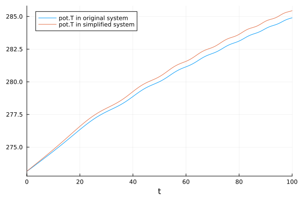
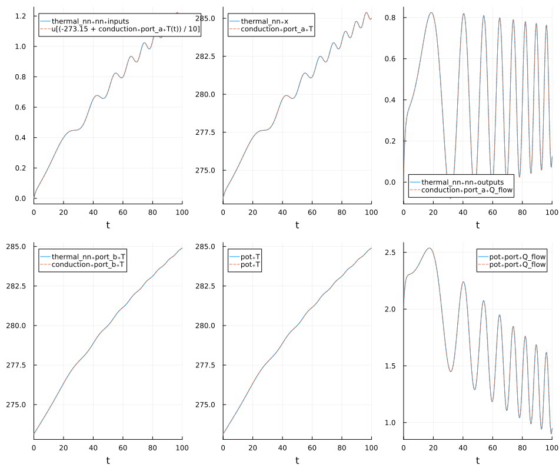
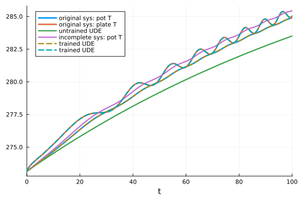

Component based Universal Differential Equations with ModelingToolkit
ModelingToolkitNeuralNets provides 2 main interfaces for representing neural networks symbolically:
- The
NeuralNetworkBlock, which represents the neural network as a block component - The
SymbolicNeuralNetwork, which represents the neural network via callable parameters
This tutorial will introduce the NeuralNetworkBlock. This representation is useful in the context of hierarchical acausal component-based model.
For such models we have a component representation that is converted to a a differential-algebraic equation (DAE) system, where the algebraic equations are given by the constraints and equalities between different component variables. The process of going from the component representation to the full DAE system at the end is referred to as structural simplification. In order to formulate Universal Differential Equations (UDEs) in this context, we could operate either operate before the structural simplification step or after that, on the resulting DAE system. We call these the component UDE formulation and the system UDE formulation.
The advantage of the component UDE formulation is that it allows us to represent the model discovery process in the block component formulation, allowing us to potentially target deeply nested parts of a model for the model discovery process. As such, this allows us to maximally reuse the existing information and also to have a result that can be expressed in the same manner as the original model.
In the following we will explore a simple example with a thermal model built with components from the ModelingToolkitStandardLibrary.
We will first start with a model that we generate synthetic data from and then we will build a simpler model that we will use for model discovery and try to recover the dynamics from the original model.
Our model represents a pot (HeatCapacitor) that is heated. In the complete model we consider that we have a plate that delays the heating of the pot. In the simple model we just consider that the heat source is directly connected to the pot.
Let's start with the definitions of the 2 models
using ModelingToolkitNeuralNets, Lux
using ModelingToolkitStandardLibrary.Thermal
using ModelingToolkitStandardLibrary.Blocks
using ModelingToolkit
using ModelingToolkit: t_nounits as t, D_nounits as D
using OrdinaryDiffEqTsit5
using Plots
using StableRNGs
using SciMLBase
input_f(t) = (1+sin(0.005 * t^2))/2
function PotWithPlate(; name)
@parameters begin
C1 = 1
C2 = 15
end
@named input = Blocks.TimeVaryingFunction(f = input_f)
@named source = PrescribedHeatFlow(T_ref = 373.15)
@named plate = HeatCapacitor(C = C1, T = 273.15)
@named pot = HeatCapacitor(C = C2, T = 273.15)
@named conduction = ThermalConductor(G = 1)
@named air = ThermalConductor(G = 0.1)
@named env = FixedTemperature(T = 293.15)
@named Tsensor = TemperatureSensor()
eqs = [
connect(input.output, :u, source.Q_flow),
connect(source.port, plate.port),
connect(plate.port, conduction.port_a),
connect(conduction.port_b, pot.port),
connect(pot.port, air.port_a),
connect(air.port_b, env.port),
connect(pot.port, Tsensor.port),
]
System(eqs, t, [], [C1, C2]; name, systems = [input, source, plate, conduction, pot, air, env, Tsensor])
end
function SimplePot(; name)
@parameters begin
C2 = 15
end
@named input = Blocks.TimeVaryingFunction(f = input_f)
@named source = PrescribedHeatFlow(T_ref = 373.15)
@named pot = HeatCapacitor(C = C2, T = 273.15)
@named air = ThermalConductor(G = 0.1)
@named env = FixedTemperature(T = 293.15)
@named Tsensor = TemperatureSensor()
eqs = [
connect(input.output, :u, source.Q_flow)
connect(source.port, pot.port)
connect(pot.port, Tsensor.port)
connect(pot.port, air.port_a)
connect(air.port_b, env.port)
]
System(eqs, t, [], [C2]; name, systems = [input, source, pot, air, env, Tsensor])
end
@mtkcompile sys1 = PotWithPlate()
@mtkcompile sys2 = SimplePot()
## solve and plot the temperature of the pot in the 2 systems
prob1 = ODEProblem(sys1, Pair[], (0, 100.0))
sol1 = solve(prob1, Tsit5(), reltol = 1e-6)
prob2 = ODEProblem(sys2, Pair[], (0, 100.0))
sol2 = solve(prob2, Tsit5(), reltol = 1e-6)
plot(sol1, idxs = sys1.pot.T, label = "pot.T in original system")
plot!(sol2, idxs = sys1.pot.T, label = "pot.T in simplified system")
If we take a closer look at the 2 models, the original system has 2 unknowns,
unknowns(sys1)2-element Vector{SymbolicUtils.BasicSymbolicImpl.var"typeof(BasicSymbolicImpl)"{SymbolicUtils.SymReal}}:
Tsensor₊port₊T(t)
source₊port₊T(t)while the simplified system only has 1 unknown
unknowns(sys2)1-element Vector{SymbolicUtils.BasicSymbolicImpl.var"typeof(BasicSymbolicImpl)"{SymbolicUtils.SymReal}}:
Tsensor₊port₊T(t)With the component UDE approach, we want to add a new component in the model that would be connected between the source and the pot such that we can use it to discover the missing physics. To this end, we will build a ThermalNN component that adds a new state in the system (x) that is prescribed by the output of the neural network, but it also incorporates physics knoweledge about the system by formulating the component as something that outputs a heat flow rate based on some scaled input temperatures.
The system in this example is quite simple, so we will use a very small neural network with 1 hidden layer of size 4. For more complex dynamics, a larger network would be required. The inputs to out neural network will use scaled temperature values, such that we don't input numbers that would be too large for the chosen activation function. The chosen activation function will always output positive numbers for positive inputs, so this also makes physical sense for out component.
function ThermalNN(; name)
n_input = 2
n_output = 1
chain = multi_layer_feed_forward(;
n_input, n_output, depth = 1, width = 4, activation = Lux.swish)
@named port_a = HeatPort()
@named port_b = HeatPort()
@named nn = NeuralNetworkBlock(; n_input, n_output, chain, rng = StableRNG(1337))
@parameters begin
T0 = 273.15
T_range = 10
C1 = 1
end
@variables begin
dT(t), [guess = 0.0]
Q_flow(t), [guess = 0.0]
x(t) = T0
end
eqs = [
dT ~ port_a.T - port_b.T
port_a.Q_flow ~ Q_flow
C1*D(x) ~ Q_flow - nn.outputs[1]
port_a.T ~ x
nn.outputs[1] + port_b.Q_flow ~ 0
nn.inputs[1] ~ (x - T0) / T_range
nn.inputs[2] ~ (port_b.T - T0) / T_range
]
System(eqs, t; name, systems = [port_a, port_b, nn])
end
function NeuralPot(; name)
@parameters begin
C2 = 15
end
@named input = Blocks.TimeVaryingFunction(f = input_f)
@named source = PrescribedHeatFlow(T_ref = 373.15)
@named pot = HeatCapacitor(C = C2, T = 273.15)
@named air = ThermalConductor(G = 0.1)
@named env = FixedTemperature(T = 293.15)
@named Tsensor = TemperatureSensor()
@named thermal_nn = ThermalNN()
eqs = [
connect(input.output, :u, source.Q_flow)
connect(pot.port, Tsensor.port)
connect(pot.port, air.port_a)
connect(air.port_b, env.port)
connect(source.port, thermal_nn.port_a)
connect(thermal_nn.port_b, pot.port)
]
System(eqs, t, [], [C2]; name, systems = [input, source, pot, air, env, Tsensor, thermal_nn])
end
@named model = NeuralPot()
sys3 = mtkcompile(model)
# Let's check that we can successfully simulate the system in the
# initial state
prob3 = ODEProblem(sys3, Pair[], (0, 100.0))
sol3 = solve(prob3, Tsit5(), abstol = 1e-6, reltol = 1e-6)
@assert SciMLBase.successful_retcode(sol3)Now that we have the system with the embedded neural network, we can start training the network. The training will be formulated as an optimization problem where we will minimize the mean absolute squared distance between the predictions of the new system and the data obtained from the original system. In order to gain some insight into the training process we will also add a callback that will plot various quantities in the system versus their equivalents in the original system. In a more realistic scenario we would not have access to the original system, but we could still monitor how well we fit the training data and the system predictions.
using SymbolicIndexingInterface
using Optimization
using OptimizationOptimJL
using LineSearches
using Statistics
using SciMLSensitivity
import SciMLLogging
import Zygote
tp = Symbolics.scalarize(sys3.thermal_nn.nn.p)
x0 = prob3.ps[tp]
oop_update = setsym_oop(prob3, tp);
plot_cb = (opt_state,
loss) -> begin
opt_state.iter % 1000 ≠ 0 && return false
@info "step $(opt_state.iter), loss: $loss"
(new_u0, new_p) = oop_update(prob3, opt_state.u)
new_prob = remake(prob3, u0 = new_u0, p = new_p)
sol = solve(new_prob, Tsit5(), abstol = 1e-8, reltol = 1e-8)
plt = plot(sol,
layout = (2, 3),
idxs = [
sys3.thermal_nn.nn.inputs[1], sys3.thermal_nn.x,
sys3.thermal_nn.nn.outputs[1], sys3.thermal_nn.port_b.T,
sys3.pot.T, sys3.pot.port.Q_flow],
size = (950, 800))
plot!(plt,
sol1,
idxs = [
(sys1.conduction.port_a.T-273.15)/10, sys1.conduction.port_a.T,
sys1.conduction.port_a.Q_flow, sys1.conduction.port_b.T,
sys1.pot.T, sys1.pot.port.Q_flow])
display(plt)
false
end
function cost(x, opt_ps)
prob, oop_update, data, ts, get_T = opt_ps
u0, p = oop_update(prob, x)
new_prob = remake(prob; u0, p)
new_sol = solve(new_prob, Tsit5(), saveat = ts, abstol = 1e-8,
reltol = 1e-8, verbose = SciMLLogging.None(), sensealg = GaussAdjoint())
!SciMLBase.successful_retcode(new_sol) && return Inf
mean(abs2.(get_T(new_sol) .- data))
end
of = OptimizationFunction(cost, AutoForwardDiff())
data = sol1[sys1.pot.T]
get_T = getsym(prob3, sys3.pot.T)
opt_ps = (prob3, oop_update, data, sol1.t, get_T);
op = OptimizationProblem(of, x0, opt_ps)
res = solve(op, Adam(); maxiters = 10_000, callback = plot_cb)
op2 = OptimizationProblem(of, res.u, opt_ps)
res2 = solve(op2, LBFGS(linesearch = BackTracking()); maxiters = 2000, callback = plot_cb)
(new_u0, new_p) = oop_update(prob3, res2.u)
new_prob1 = remake(prob3, u0 = new_u0, p = new_p)
new_sol1 = solve(new_prob1, Tsit5(), abstol = 1e-6, reltol = 1e-6)
plt = plot(new_sol1,
layout = (2, 3),
idxs = [
sys3.thermal_nn.nn.inputs[1], sys3.thermal_nn.x,
sys3.thermal_nn.nn.outputs[1], sys3.thermal_nn.port_b.T,
sys3.pot.T, sys3.pot.port.Q_flow],
size = (950, 800))
plot!(plt,
sol1,
idxs = [
(sys1.conduction.port_a.T-273.15)/10, sys1.conduction.port_a.T,
sys1.conduction.port_a.Q_flow, sys1.conduction.port_b.T,
sys1.pot.T, sys1.pot.port.Q_flow],
ls = :dash)
As we can see from the final plot, the neural network fits very well and not only the training data fits, but also the rest of the predictions of the system match the original system. Let us also compare against the predictions of the incomplete system:
plot(sol1, label = ["original sys: pot T" "original sys: plate T"], lw = 3)
plot!(sol3; idxs = [sys3.pot.T], label = "untrained UDE", lw = 2.5)
plot!(sol2; idxs = [sys2.pot.T], label = "incomplete sys: pot T", lw = 2.5)
plot!(new_sol1; idxs = [sys3.pot.T, sys3.thermal_nn.x],
label = "trained UDE", ls = :dash, lw = 2.5)
Now that our neural network is trained, we can go a step further and use SymbolicRegression.jl to find a symbolic expression for the function represented by the neural network.
using SymbolicRegression
lux_model = new_sol1.ps[sys3.thermal_nn.nn.lux_model]
nn_p = new_sol1.ps[sys3.thermal_nn.nn.p]
T = new_sol1.ps[sys3.thermal_nn.nn.T]
sr_input = reduce(hcat, new_sol1[sys3.thermal_nn.nn.inputs])
sr_output = LuxCore.stateless_apply(lux_model, sr_input, convert(T, nn_p))
equation_search(sr_input, sr_output)HallOfFame{...}:
.exists[1] = true
.members[1] = PopMember(tree = (0.3924778941031217), loss = 0.0750902623057883, cost = 0.3277202353014438)
.exists[2] = false
.members[2] = undef
.exists[3] = true
.members[3] = PopMember(tree = (0.8856353315229921 * 0.4426980527126105), loss = 0.07509042947077256, cost = 0.3277209648680519)
.exists[4] = false
.members[4] = undef
.exists[5] = true
.members[5] = PopMember(tree = ((x1 - x2) * 10.000070950787437), loss = 2.4973934450412055e-6, cost = 1.089950071177335e-5)
.exists[6] = false
.members[6] = undef
.exists[7] = true
.members[7] = PopMember(tree = (((x1 - x2) * 9.991369842007222) + 0.000508178825398969), loss = 2.4126154501366433e-6, cost = 1.0529499814381811e-5)
.exists[8] = false
.members[8] = undef
.exists[9] = true
.members[9] = PopMember(tree = ((x2 * -9.992291122705321) - ((x1 * -9.991649999801856) + -0.0009268844572924247)), loss = 2.357030648386242e-6, cost = 1.0286908248585384e-5)
.exists[10] = false
.members[10] = undef
.exists[11] = true
.members[11] = PopMember(tree = ((x2 * -9.992291123201085) - (((x1 * -9.99164999973264) + -0.0012464648516480952) - -0.000319579970796869)), loss = 2.3570306483860847e-6, cost = 1.0286908248584697e-5)
.exists[12] = false
.members[12] = undef
.exists[13] = true
.members[13] = PopMember(tree = ((x2 * -9.997154851964746) + ((-1.3754309139498447e-5 / (-0.0016064246276951985 - x2)) - (x1 * -9.997296398088128))), loss = 1.3031036080140305e-6, cost = 5.68720108209822e-6)
.exists[14] = false
.members[14] = undef
.exists[15] = true
.members[15] = PopMember(tree = (((x2 * -10.000473516554054) + ((-1.869567535120468e-5 / (-0.002037468617382386 - x2)) - (x1 * -10.00113871566576))) + -0.0006146584728508069), loss = 1.2631718376240846e-6, cost = 5.512924833935647e-6)
.exists[16] = false
.members[16] = undef
.exists[17] = true
.members[17] = PopMember(tree = ((x2 * -9.998240766288976) - ((0.0023084530511326695 / (((x2 * x2) * -33683.668756391744) + -0.29149628744308687)) + (x1 * -9.998355963228594))), loss = 1.1970630145433092e-6, cost = 5.224402748777567e-6)
.exists[18] = false
.members[18] = undef
.exists[19] = true
.members[19] = PopMember(tree = ((x2 * -10.001322929003505) + (((4.461479195064953e-5 - x1) + (0.00036757822882956025 / (((x2 * -40721.432347485395) * x2) + -0.44387800933893684))) * -10.001792967099899)), loss = 1.173779657775071e-6, cost = 5.122786015470374e-6)
.exists[20] = false
.members[20] = undef
.exists[21] = true
.members[21] = PopMember(tree = ((x2 * -10.001245799846686) + ((4.318669578098344e-5 - ((-0.0003694885247163376 / (((x2 * -43806.49521500449) * (0.9295752181867669 * x2)) + -0.44388077045248997)) + x1)) * -10.001703474267552)), loss = 1.1738863418410004e-6, cost = 5.123251622143139e-6)
.exists[22] = false
.members[22] = undef
.exists[23] = true
.members[23] = PopMember(tree = ((x2 * -10.001548135278991) - ((x1 * -10.00154383358877) + (0.004043933980772231 / ((((x2 * x2) / ((x1 * -131.5213079299183) + 3.359536145916463)) * -33672.840955419066) + -0.5653157431493588)))), loss = 1.1176711171657627e-6, cost = 4.877908669643261e-6)
.exists[24] = false
.members[24] = undef
.exists[25] = true
.members[25] = PopMember(tree = ((x2 * -10.002615757873365) - ((x1 + (-0.0003848219746827127 / ((x2 * (((x2 / ((x1 * -131.52130744937864) + 3.543487267118793)) * -33672.84095542004) + -131.52130753103916)) + -0.46029355190721694))) * -10.00259463804928)), loss = 1.0868149468788275e-6, cost = 4.743241522713394e-6)
.exists[26] = false
.members[26] = undef
.exists[27] = true
.members[27] = PopMember(tree = ((((-2.8730652666301003e-5 - x1) - (-0.0003790094522973226 / ((x2 * (((x2 * -33672.84095484192) / ((x1 * -132.83925202563273) + 3.537841771097438)) + -129.29962156754283)) + -0.46693089592938525))) * -10.00020089019586) + (x2 * -10.000442569409056)), loss = 1.0751020228011513e-6, cost = 4.6921222148706235e-6)
.exists[28] = false
.members[28] = undef
.exists[29] = true
.members[29] = PopMember(tree = ((0.000312111159208014 - ((x1 - (0.00037713099854999447 / ((x2 * ((((x2 * -33672.84095484154) + 3.539554784040651) / ((x1 * -132.83925236698204) + 3.537832328835359)) + -132.83917615076012)) + -0.46697544993990037))) * -10.000260060813222)) + (x2 * -10.000531248993884)), loss = 1.0746413791317614e-6, cost = 4.690111804371485e-6)
.exists[30] = false
.members[30] = undef
Looking at the results above, we see that we have a term linear in the difference between its inputs, x₁ - x₂, which were the scaled temperature values. This also makes sense physically, as the heat flow rate through the missing components in our system is proportional with the temperature difference between the ports. Having the symbolic expression for the UDE results thus helps us understand the missing physics better.